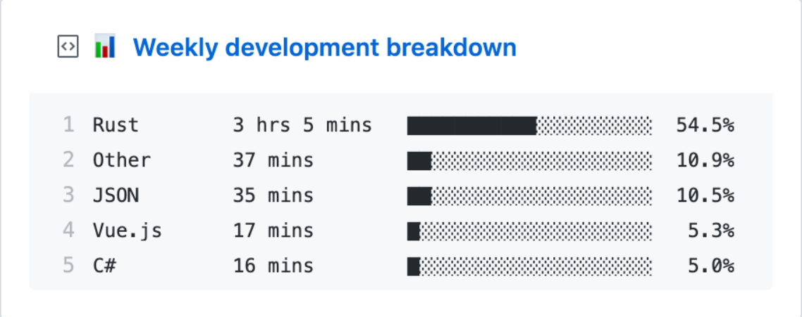

About Me
Sup, this Jhales Santiago also known as "Parasite" 4th year college student at Bestlink College of the Philippines , pursuing my degree in Information Technology. I also love exploring opportunities to attend seminars and events, both online and offline, to expand my knowledge and connect with the wider tech community.
I am passionate about creating clean, efficient, and user-friendly solutions. I constantly learn and improve my skills to deliver high-quality solutions.
My Skills & Interests
HTML5
CSS3
JavaScript
PHP
Laravel
SQL
Java
Git
Responsive Design
WakaTime Stats
Last year, I coded for almost 5 hours using WakaTime!
Since January, 2024, I've coded for a total of 1084 hrs 47 mins.
Data from 2024-2025

GitHub Stats
 GitHub Stats Placeholder
GitHub Stats Placeholder
 Most Used Languages Chart Placeholder
Most Used Languages Chart Placeholder